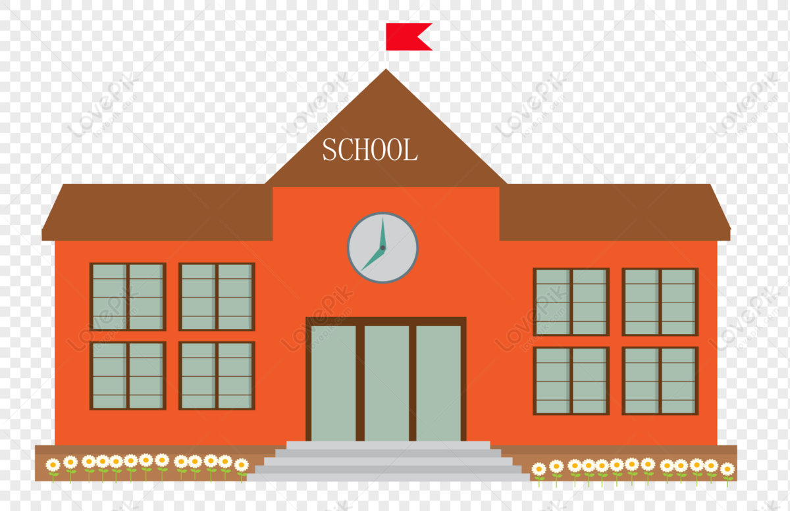
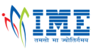

Hi, My name is Hritik
and i am a passionate

What i have done so far
Schooling

10th Class (2015-2016)
After completing my 10th Class from the CBSE board, I made the decision to pursue a career as a software engineer.
12th Class(2017-2018)
During my transition from 11th to 12th grade, I acquired foundational knowledge in computer science. As a beginner, I learned essential skills such as C++ and SQL, which laid the groundwork for my understanding of programming and database management. It was during this time that I made the decision to pursue a career in the field of BCA (Bachelor of Computer Applications).

BCA (2019-2022)
I have successfully obtained my BCA degree from Chaudhary Charan Singh University..During my BCA graduation, I delved into the realm of programming languages, including Java, Python, and JavaScript. As I progressed, I discovered my passion for web development, prompting me to acquire proficiencies in essential skills like HTML, CSS, and JavaScript. These skills proved invaluable in the development of several college-level projects. As I aspired for greater opportunities in my career, I made the decision to pursue an MCA (Master of Computer Applications) to further enhance my knowledge and skills.
MCA (2022-2024)
During my MCA program, I dedicated myself to honing my skills in coding and focused on improving my understanding of Data Structures and Algorithms (DSA). I also made significant progress in my SQL proficiency and gained valuable knowledge in backend development. As part of my learning journey, I acquired expertise in Node.js and earned certificates from a 5-day Python boot camp and an AWS boot camp. As a result, I now possess a solid foundation of knowledge in Python programming and AWS services.